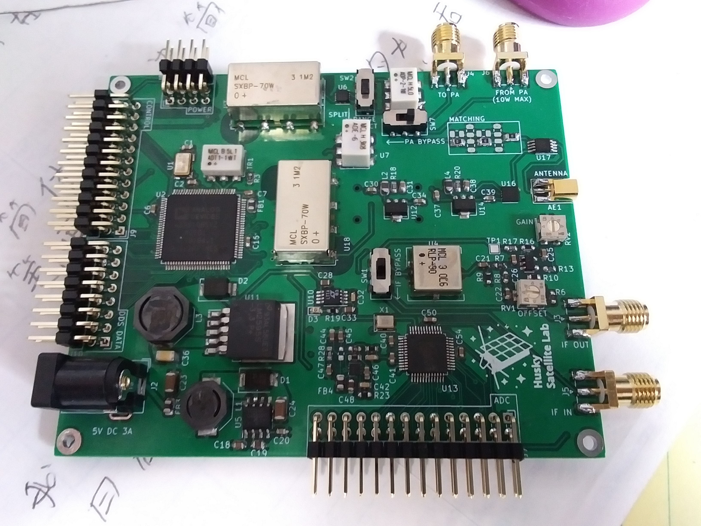
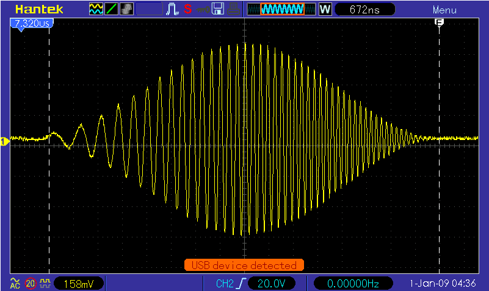
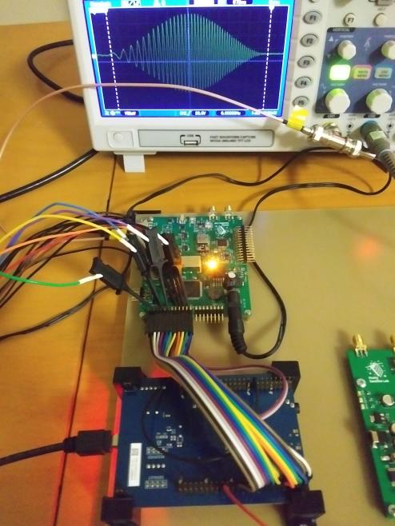
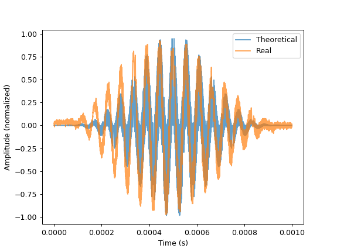
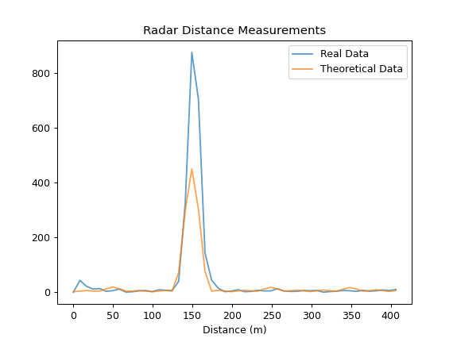
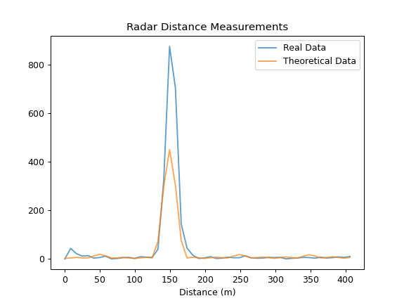
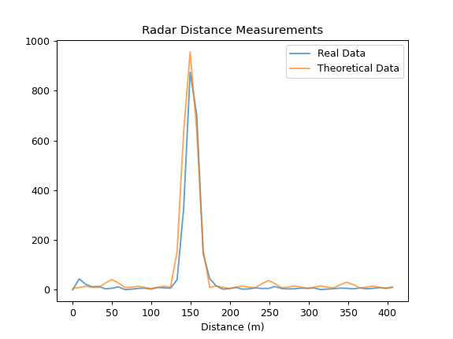
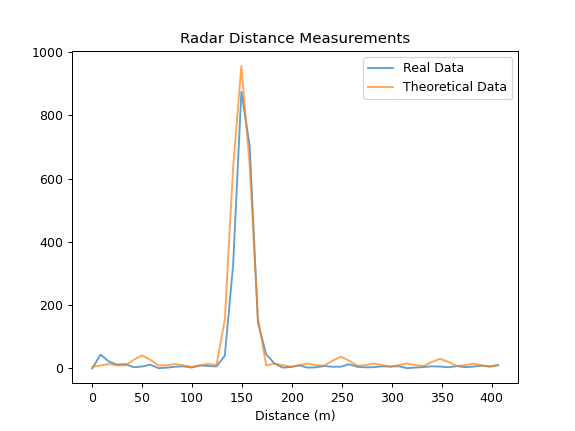

Ground Penetrating SAR for Finding Lunar Lava Tubes
This is my writeup of the work I've done developing a ground penetrating synthetic aperture
radar for the Husky Satellite Lab at UW.
Background
I joined the Husky Satellite Lab (HSL) in 2019, just in time to see the years of hard
work the group had put into Huskysat-1 culminate in a successful deployment from the
ISS. After operating the satellite for several months, we transferred control to Amsat
and all of the older members of the club who had stuck around to see the project through
moved on. After my first year, virtually all of the older members had left, leaving only
a handful of us to choose a new project for the group. Professor Robert Winglee (who sadly
passed away that winter) was our PI at the time, and he strongly encouraged us to develop
technologies that targeted a lunar mission.
I proposed the Ground Penetrating Radar to the group after reading a few articles about lunar
lava tubes. The first is
The structural stability of lunar lava tubes by David M. Blair et al., which uses FEA to
suggest that lava tubes on the moon could be kilometers wide and hundreds of meters tall - large
enough to fit a small city. A second article (
Evidence of large empty lava tubes on the Moon using GRAIL gravity by Loic Chappaz et al.)
found supporting evidence for these large subsurface voids in GRAIL gravimetric data.
Finally,
A multi-frequency radar sounder for lava tubes detection on the Moon: Design, performance
assessment and simulations by Leonardo Carrer, Christopher Gerekos, and Lorenzo Bruzzone"
presented simulations of a radar sounder instrument that would be able to detect most of the possible
lava tube geometries described by Blair's paper. After speaking with both David Blair and Cristopher
Gerekos (who designed the simulator used in the third paper), I thought it would be reasonable to
try to build the instrument that they had described.
Originally, this project had no budget, and I paid for a lot of the equipment out of pocket. After I
was able to demonstrate a working radar, we were granted $2000 by the Washington NASA Space Grant
Consortium, which was presided over by Professor Winglee. These funds covered the hardware cost of
both the GPR itself, as well as the DDS-AWG that we built to test it.
Instrument Principles
Several physical properties of the moon constrain the radar parameters. Lower center frequencies yield
greater penetration depths, and larger bandwidths yield finer resolution. There is, however, a tradeoff
between a lower center frequency and higher bandwidth, because as the fractional bandwidth of the chirp
becomes very large, the whole system becomes harder to match/tune. Because it is not possible to deploy
a large, wideband antenna from a small satellite, other orbital synthetic aperture radars (SAR) like the
LRS, SHARAD, and ALSE use isotropic dipoles for their low frequency experiments; since we would have to do
this as well, we were very concerned about how well we could match the antenna.
We also had to choose an architecture for the radar, with low cost and rapid development taking priority
over long mission duration or even instrument performance - the goal was a technology demonstration and
possible lave tube detection, not a detailed characterization or mapping of any lunar lava tubes. We chose
to use a DDS-based architecture because a DDS gives us unmatched flexibility for our waveform, and because
it allowed us to keep our analog frontend as small as possible (we only obtained access to a VNA halfway
through the project). The GPR is based on the LRS - the DDS generates a windowed chirp that is transmitted,
a T/R switch is flipped, and the echo is amplified and mixed with a second, identical chirp with a known
time offset. This "de-chirp" method allows us to significantly reduce the required analog bandwidth and
sample rate for the receiver, since we can trade vertical coverage (the range of our resulting radargrams
in the nadir direction) for a lower beat frequency from the mixer. This way, we can use chirped signals with
center frequencies above 100MHz, and sample the beat frequency at 100Mhz or less without approaching the
Nyquist rate. It is worth noting that the pulse duration is also traded here - long pulses give lower beat
frequencies, but since the radar is half-duplex, the pulses must be short enough that consecutive pulses do
not overlap.
 We choose to use the AD9910 from Analog Devices as the DDS core for the GPR. At $63, we couldn't beat it
for price given the level of integration, and it has a number of very useful features that make it perfect for
our application. First, it has an internal "ramp generator" which can be programmed to sweep amplitude, frequency
or phase while the DDS operates. This gives us a very easy way to generate the variable length chirps with
the desired start and stop frequencies. Additionally, the AD9910 has an internal RAM that can be read out
in order to modulate frequency, phase, or amplitude. By programming the RAM with a Hann window and targeting
amplitude, we can window the chirp while it is generated. Finally, because the Hann window is completely
arbitrary, we can tweak the amplitudes to predistort the chirp, in order to account for the transfer function
of the hardware on the DDS output.
We choose to use the AD9910 from Analog Devices as the DDS core for the GPR. At $63, we couldn't beat it
for price given the level of integration, and it has a number of very useful features that make it perfect for
our application. First, it has an internal "ramp generator" which can be programmed to sweep amplitude, frequency
or phase while the DDS operates. This gives us a very easy way to generate the variable length chirps with
the desired start and stop frequencies. Additionally, the AD9910 has an internal RAM that can be read out
in order to modulate frequency, phase, or amplitude. By programming the RAM with a Hann window and targeting
amplitude, we can window the chirp while it is generated. Finally, because the Hann window is completely
arbitrary, we can tweak the amplitudes to predistort the chirp, in order to account for the transfer function
of the hardware on the DDS output.
Test Plan and the DDS-AWG
As we made progress toward specifying the radar parameters, specifically the chirp bandwidth (30MHz) and
center frequency (80MHz), we realized that evaluating the instrument on Earth would be extremely difficult.
The first challenge is that there are very few places in Washington or even on Earth that are as dry as the
moon, with targets that look like lave tubes. Terrestrial lava tubes are too small to be detectable with
our system, and there was always going to be the challenge of moving the instrument 50-100km away from the
target to simulate the altitude of a lunar orbit. These challenges, of course, are not insurmountable, and we
put together detailed plans for overcoming them: we could test with higher frequencies and bandwidths on Earth
to resolve smaller features, use high altitude balloons to check our instrument at altitude, and run as many
lab tests as possible to confirm that the radar was behaving as expected. The second problem is that the low
center frequency and high bandwidth of the radar means that the chirp it generates spans an enormous chunk of
the VHF spectrum. Professor Winglee was very against obtaining an experimental license from the FCC, and although
he allowed us to try, the presence of a few military frequency allocations in the band we were interested in
stalled the process almost immediately.
In liu of real-world testing at the system level, I proposed that, in addition to the real-world tests we had
already described, we could use the radar simulator that Chris Gerekos had built for his lava tube paper to
simulate reflections from the moon. This simulator starts with a chirped waveform, and computes the echo by
summing the reflected signals from millions of triangles imported from a user supplied DEM of the lunar surface.
We could generate a chirp with our instrument and record it with a DSO, and then feed this signal into the
simulator. We'd allow the simulator to calculate the reflected chirp, and then we would synthesize it, attenuate
it, and feed it back into the radar after the appropriate delay. Then, we could take the output from the radar
and perform SAR processing on a collection of these rangelines to recover the radargram, which we would
compare to the simulated radargrams in Gerekos' paper.
This idea garnered the support of Professor Winglee and the rest of the satellite lab, but it required us to
obtain or design/build a DDS capable of simulating the rangelines returned by Gerekos' simulator. I spoke to
an engineer at Siglent, and their highest performance AWG could only generate some of the waveforms we are
interested in. We would not be able to afford the kind of instrument that we needed, so I started working on
a design built around the DAC5687 from Texas Instruments. This chip can use an onboard NCO to upconvert input
data at a lower sample rate to a full 500MSps. The rest of the AWG consists only of a CPLD which allows a user
to program a high speed SRAM with waveform data, and a USB-Serial converter from Microchip. The design files
and HDL for this DDS are open source and available on Github.
Bringup
After Professor Winglee passed away, I laid out hardware for the radar and we purchased the boards and components.
This is what it looked like after 8 hours of assembly:

This PCB is designed for development only, so it would not fit in a cubesat form factor and it makes extensive
use of jumper cables.
Progress stalled after I graduated and turned the hardware over to my peers at the Husky Satellite Lab - as I
understand it, the lab was restructured and nobody was available to pick it up. In August 2021, I reached out
and asked if I could have the hardware sent to me so that I could keep working on it, and I mounted the radar,
the DDS, and an STM32 eval board to a sheet of prepreg I had laying around. I wrote a driver for the AD9910
(open source, on Github) that allows the instrument to generate
Hann windowed chirps that match the expected waveform:


Radar Simulator Testing
The first test of the system involves measuring the length of a spool of coaxial cable from Home Depot.
Because we cannot legally transit at the frequencies that the radar is designed to use, an end-to-end test is only possible
if the signal is confined to a cable. I connect the output which would normally feed the PA to one length
of coaxial cable, and I connect the other end of the cable to the antenna connector. The transmit/receive
switch is set to receive, and a switch on the PCB feeds the output of the DDS into a power divider. This
way, half the signal goes through the coaxial cable, and the other half goes directly into the mixer. The
radar generates a chirp from 65 to 95MHz that lasts for 1 millisecond. The raw output of the mixer is shown
below, along with the theoretical result:

The Hann windows are not perfectly congruent - this is something we are investigating. It is likely that
this is an error in the programmed Hann window, but it can be fixed with predistortion in an case. The
measured tie delay can be calculated by taking an FFT, and dividing by the frequency rate of change. The
distance is then just the time delay times the speed of light, taking the velocity factor of the coaxial
cable (0.83 for cheap RG6) into account:
 
I've zoomed in on the second image to make the length of the coax more obvious. The system's measured length
is within 5m (the range resolution) of the true 152m (500ft) length of the coaxial cable. In these images,
the real system seems to outperform the theoretical calculations, which was bizarre to me. After checking for errors, I realized that this was due to
the filtering that the real signal had. After digitally filtering the theoretical IF, it outperforms the
real system:

I've zoomed in on the second image to make the length of the coax more obvious. The system's measured length
is within 5m (the range resolution) of the true 152m (500ft) length of the coaxial cable. In these images,
the real system seems to outperform the theoretical calculations, which was bizarre to me. After checking for errors, I realized that this was due to
the filtering that the real signal had. After digitally filtering the theoretical IF, it outperforms the
real system:
 
